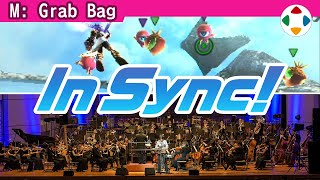
速览
你有过在全编制管弦乐团的演奏背景下玩游戏的经历吗？樱井有：PRESS START 2012 上的《新·光神话 帕尔特娜之镜》节目。新光神话的空中战约 5 分钟，他玩第 12 章的空中战，由管弦乐团配合游戏展开演奏。第 12 章讲述阻止自然王娜裘蕾投下「初始化炸弹」、直到攻入初始化炸弹要塞的故事，原曲作曲是古代祐三。设定是最高难度 9.0，神器攻击力普通，防御力 0。要点：首先有中 Boss，它决定通关时间不同，所以乐团必须配合击破时机等；其次他可能被打倒，也就是 Game Over——设定严苛到一瞬间就会被击倒，而一旦 Game Over，演奏当场中断、没有第二次，观众就亏了。就这样开始了游戏与演奏的现场，有幸在场的观众想必手心冒汗，实际也收到了很多这样的感想和反应，应是在别处尝不到的体验。PRESS START 的生命就在于现场：只在当场的乐趣，演奏也是演完流走、当场结束，正因如此才有很多妙处——能做这样的现场尝试真的很好，大概一生难忘。后半播放第 12 章空中战的样子：影像不是当时的，而是为配合 PRESS START 的演奏重新录制的（游玩与难度、武器不完全相同，音乐、音效、语音则取自当时的演奏会录音），没有混音所以有粗糙处。
1. 和管弦乐团一起玩 0:05
在 PRESS START 2012，节目之一是《新·光神话 帕尔特娜之镜》：樱井现场游玩第 12 章空中战，管弦乐团配合游戏展开演奏。
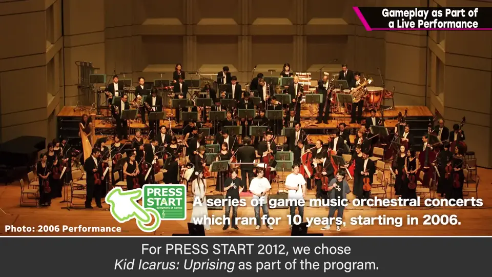
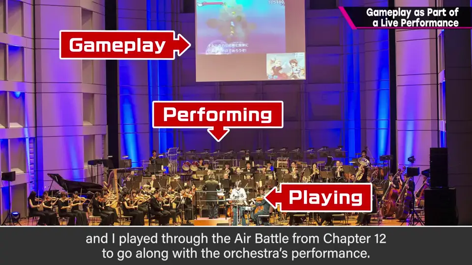
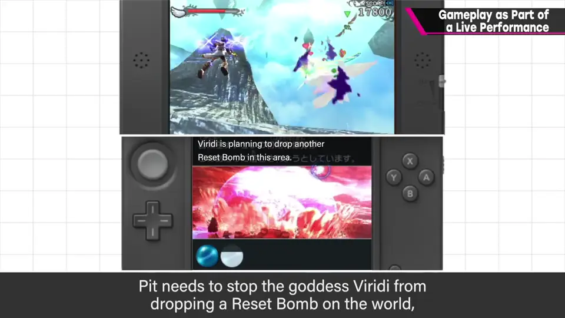
第 12 章：阻止自然王娜裘蕾投下初始化炸弹，直到攻入初始化炸弹要塞。原曲作曲是古代祐三。
2. 严苛的设定 0:53
- 难度设为最高的 9.0，神器攻击力普通，防御力 0。
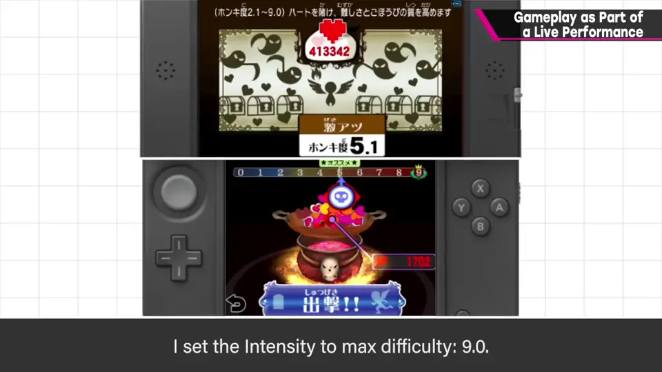
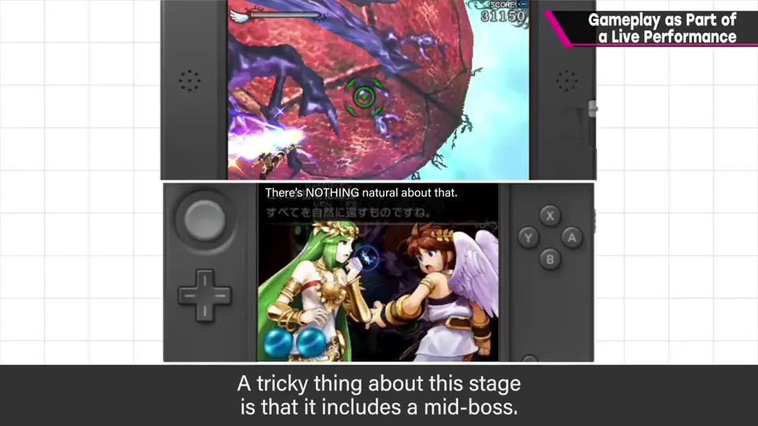
- 有中 Boss，通关时间会变，乐团必须配合击破时机等。
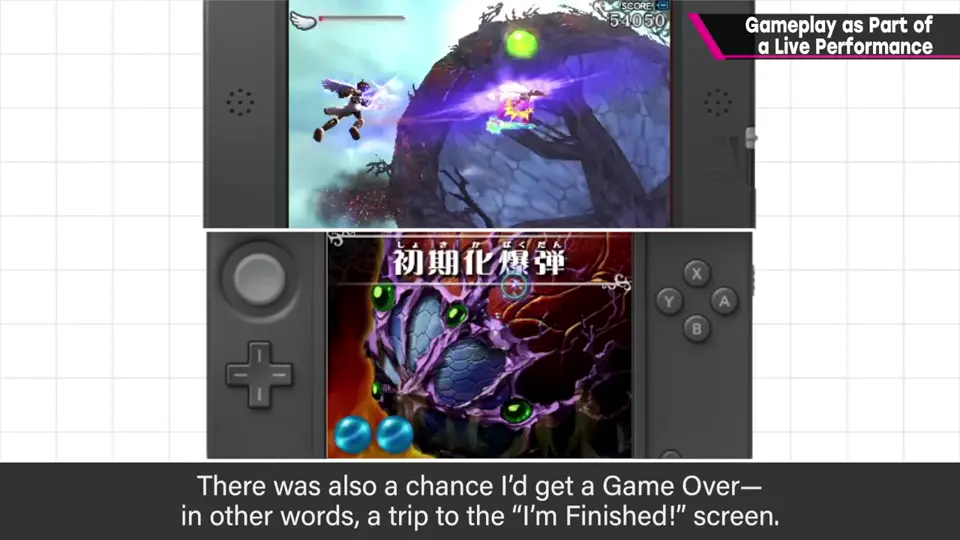
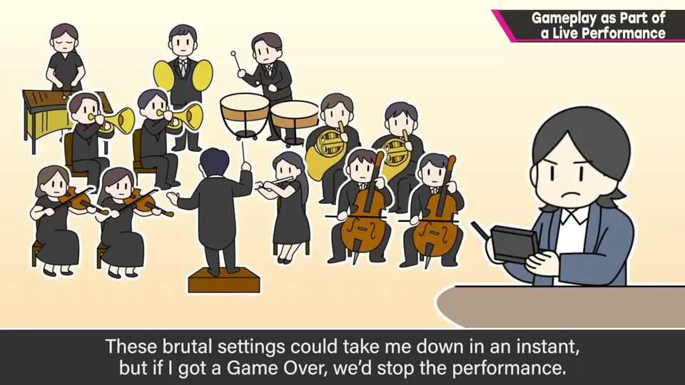
3. 现场才有的价值 1:27
有幸在场的观众想必手心冒汗，实际也收到了很多这样的感想和反应——应是别处尝不到的体验。
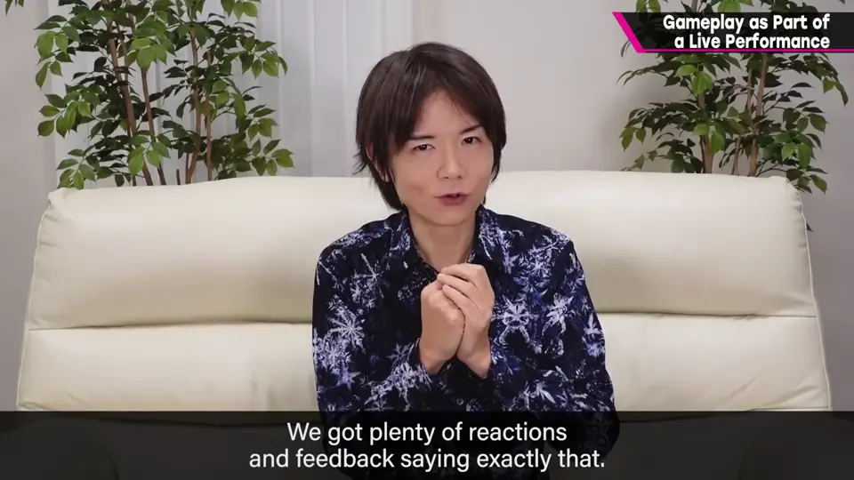
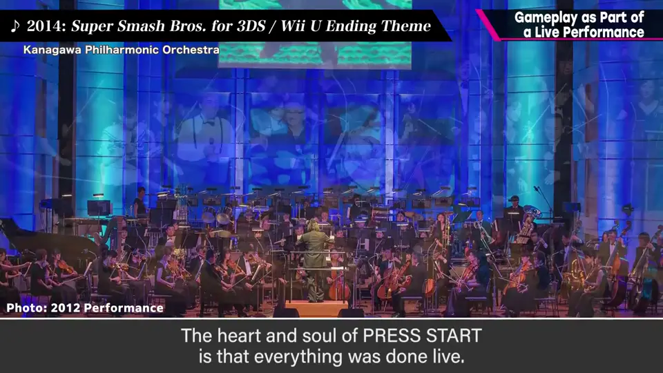
4. 第 12 章空中战 2:14
后半播放第 12 章空中战：影像为配合当时演奏重新录制，游玩与难度、武器不完全相同；音乐、音效、语音取自当时的演奏会录音。
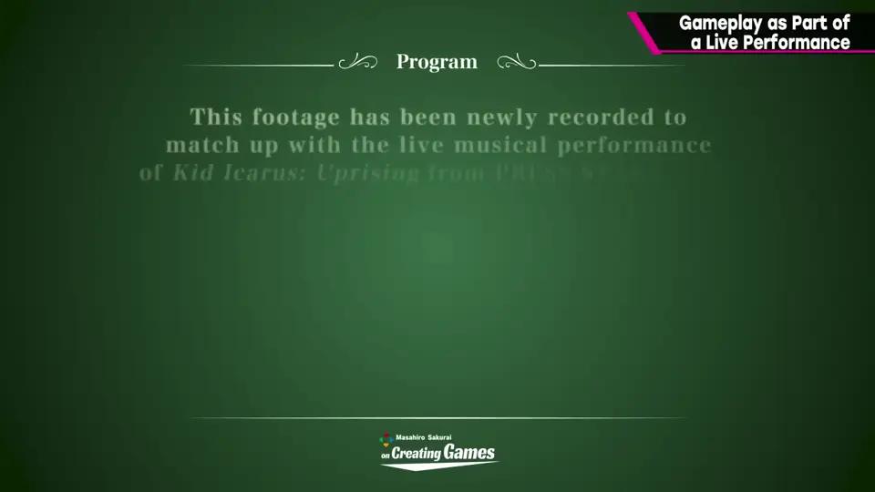
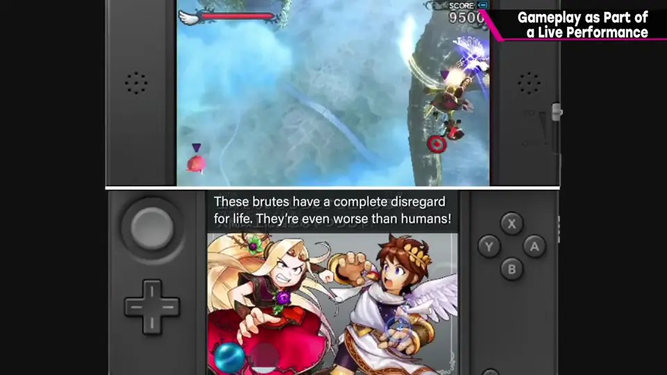
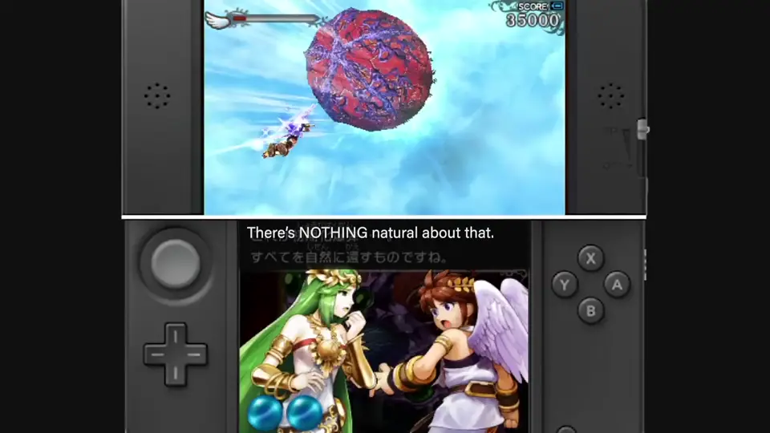
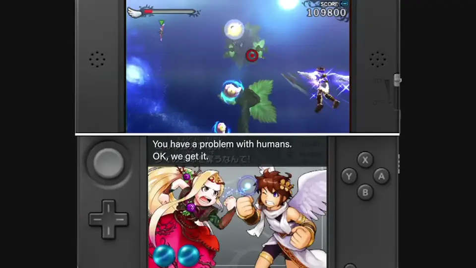
自测题
1. 这次现场游玩的规则有哪些紧张点？
难度 9.0、防御力 0；中 Boss 让时间不定；Game Over 则演奏当场中断、没有第二次。 1:12
2. 为什么乐团必须配合游戏？
有中 Boss 等，通关时间不固定，演奏要配合击破时机等展开。 1:03
3. 樱井认为 PRESS START 的生命是什么？
现场——只在当场的一期一会的乐趣。 1:48